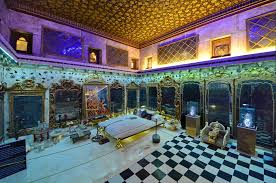
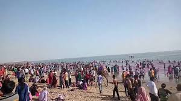

Bhuj Palaces
1. Aina Mahal:

The Aaina Mahal palace, or 'Hall of Mirrors' was built during the flamboyant rule of Lakhpatji in the middle of the 18th century. This beautiful palace also houses a handicraft museum where the crafts from various parts of Kutch is put.
2.White Desert of Kutch:
Also known as the Great Rann of Kutch, the White Desert is a vast area of pristine white salt desert often explored for its natural beauty and ecological importance. It is also called the world's largest salt desert which stretches from the mouth of River Indus to the Gulf of Kutch.
3.Madhvi Beach:

Mandvi beach in Bhuj is one of those places that one must visit when on the northwestern coast of India for its beautiful, idyllic serenity.